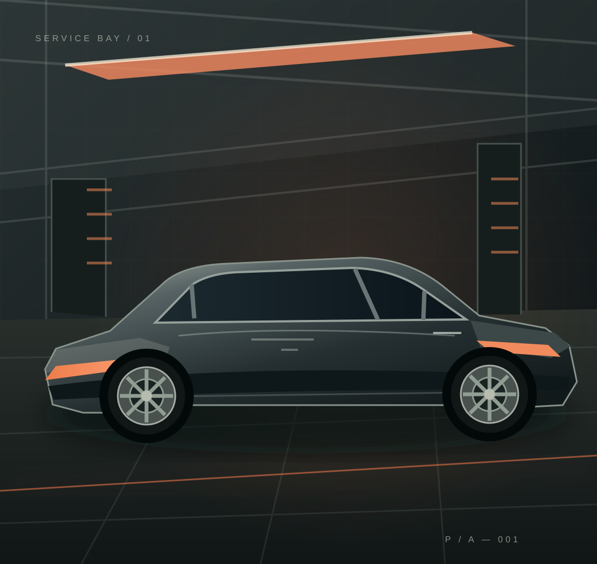
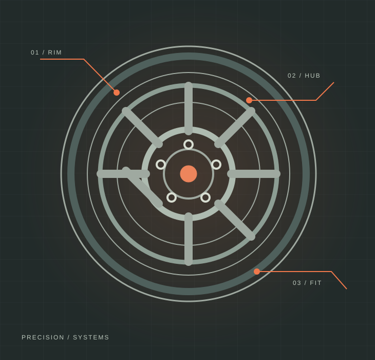

Oil & filters
Routine service essentials, organized around clear information and easy next steps.
Clear services. A straightforward process. An automotive website designed to make the next step feel simple.
BUILT AS A REAL-WORLD
COURSE EXERCISE — NOT A LIVE BUSINESS

A simple, scannable service catalogue. Visitors can understand the options before deciding what to ask.
Routine service essentials, organized around clear information and easy next steps.
A clear starting point when something feels off and the cause is not yet known.
Present brake-system inspections and repair enquiries without unnecessary complexity.
A dedicated service card that makes a commonly requested job easy to find.
Make it easy to enquire about handling, ride comfort and related components.
Not sure which service fits? Start with a general vehicle-check enquiry.
Illustrative service descriptions only. A real workshop must approve its actual offerings before publishing.

DETAIL STUDY / 02A useful service website should answer three questions quickly: what can be done, what happens next, and how do I get started?
Find the service you need
Understand the process
Make an informed enquiry
A sample customer journey with no intimidating forms and no obligation to enter a detailed problem description.
Select a category, or choose “Not sure” if you need guidance.
A short optional note can add context. No complicated diagnosis required.
Preview the details in this demo. No data is submitted or stored.
Frequently asked questions help visitors make decisions without unnecessary friction.
No. This is a fictional automotive service website created exclusively as a practical project for the AI BUILDER course.
No. The request experience is a local interactive demonstration. It does not transmit, save or send any information.
No. The sample flow lets you select a service, choose “Not sure” or add an optional note.
Yes, after replacing the fictional content with verified business information and setting up a genuine, tested contact or booking channel.
See how a straightforward service request could work. This demo is interactive, but it never sends a booking.